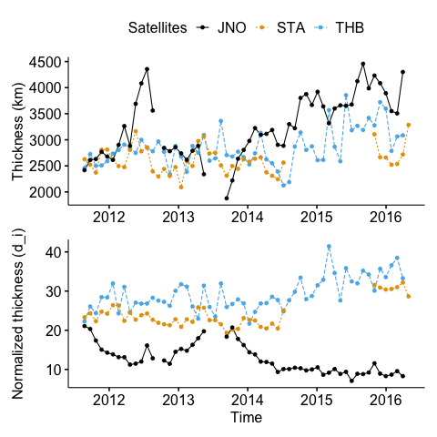
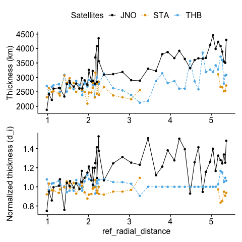
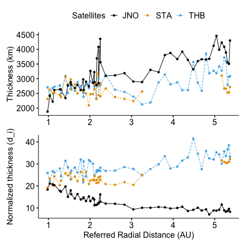
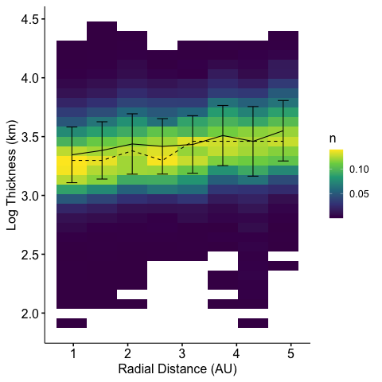
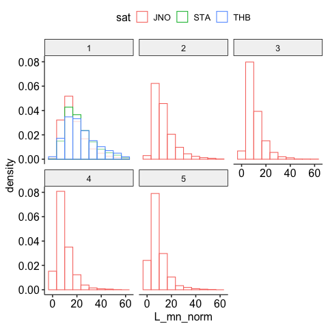
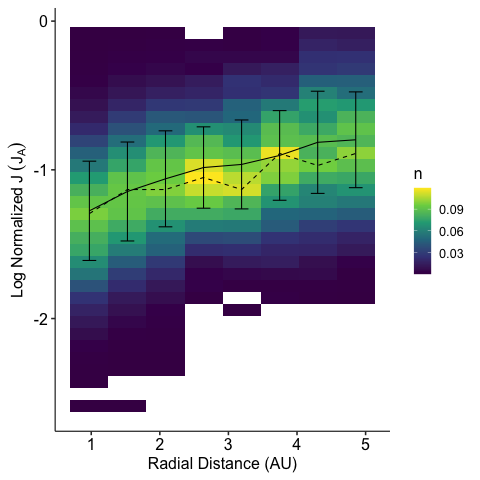
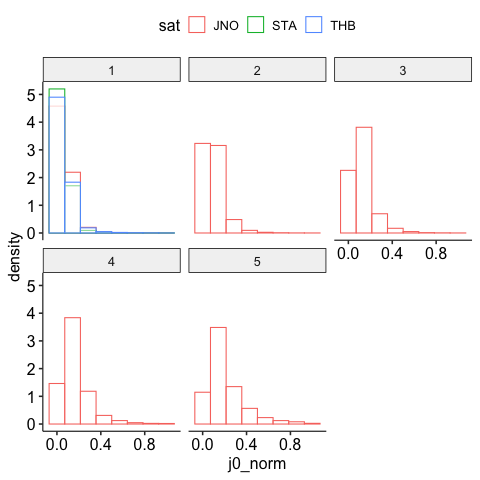
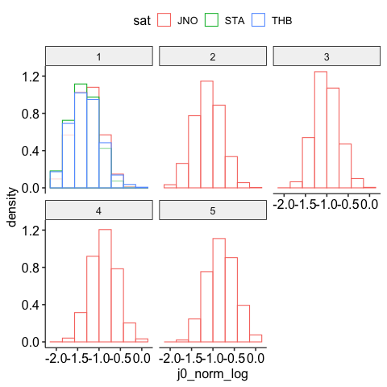

Code
import polars as pl
import polars.selectors as cs
import pandas as pd
import numpy as np
from loguru import loggerimport polars as pl
import polars.selectors as cs
import pandas as pd
import numpy as np
from loguru import loggerfrom ids_finder.utils.basic import load_catalog
catalog = load_catalog('../../')Connect python with R kernel
from beforerr.r import py2rpy_polars
import rpy2.robjects as robjects
r = robjects.r
r.source('utils.R')
conv_pl = py2rpy_polars()The rpy2.ipython extension is already loaded. To reload it, use:
%reload_ext rpy2.ipython06-Nov-23 08:41:17 WARNING 06-Nov-23 08:41:17: R[write to console]: callbacks.py:124 Attaching package: ‘dplyr’
WARNING 06-Nov-23 08:41:17: R[write to console]: The following objects are callbacks.py:124 masked from ‘package:stats’: filter, lag
WARNING 06-Nov-23 08:41:17: R[write to console]: The following objects are callbacks.py:124 masked from ‘package:base’: intersect, setdiff, setequal, union
from ids_finder.candidates import cIDsDataset
sta_dataset = cIDsDataset(sat_id="STA", tau=60, ts=1, catalog=catalog)
jno_dataset = cIDsDataset(sat_id="JNO", tau=60, ts=1, catalog=catalog)
thb_dataset = cIDsDataset(sat_id="THB", tau=60, ts=1, catalog=catalog)06-Nov-23 08:33:48 INFO 06-Nov-23 08:33:48: Loading data from data_catalog.py:502 'candidates.STA_ts_1s_tau_60s' (LazyPolarsDataset)...
WARNING 06-Nov-23 08:33:48: logger.py:205 /Users/zijin/miniforge3/envs/cool_planet/lib/python3.10/site-packages/ked ro/io/partitioned_dataset.py:200: KedroDeprecationWarning: 'PartitionedDataset' has been moved to `kedro-datasets` and will be removed in Kedro 0.19.0. warnings.warn(
INFO 06-Nov-23 08:33:48: Loading data from 'STA.primary_mag_ts_1s' data_catalog.py:502 (PartitionedDataset)...
INFO 06-Nov-23 08:33:48: Loading data from data_catalog.py:502 'candidates.JNO_ts_1s_tau_60s' (LazyPolarsDataset)...
INFO 06-Nov-23 08:33:48: Loading data from 'JNO.primary_mag_ts_1s' data_catalog.py:502 (PartitionedDataset)...
INFO 06-Nov-23 08:33:48: Loading data from data_catalog.py:502 'candidates.THB_ts_1s_tau_60s' (LazyPolarsDataset)...
INFO 06-Nov-23 08:33:48: Loading data from 'THB.primary_mag_ts_1s' data_catalog.py:502 (PartitionedDataset)...
from beforerr.basics import pmap
from ids_finder.utils.analysis import filter_tranges_dsthb_inter_state_sw: pl.LazyFrame = catalog.load('thb.inter_state_sw')
start, end = thb_inter_state_sw.select(['start', 'end']).collect()
thb_sw_dataset = filter_tranges_ds(thb_dataset, (start, end))INFO 06-Nov-23 08:33:48: Loading data from 'thb.inter_state_sw' data_catalog.py:502 (LazyPolarsDataset)...
all_datasets = [sta_dataset, jno_dataset, thb_sw_dataset]all_candidates_l0 : pl.DataFrame = pl.concat(
all_datasets | pmap(lambda x: x.candidates),
how="diagonal",
)Some extreme values are present in the data. We will remove them.
NVARS = ['d_star', 'L_mn', 'L_mn_norm', 'j0', 'j0_norm', 'duration', 'v_mn']
DISPLAY_VARS = ['time', 'sat'] + NVARS
def check_candidates(df):
return df[NVARS].describe()
check_candidates(all_candidates_l0)| describe | d_star | L_mn | L_mn_norm | j0 | j0_norm | duration | v_mn |
|---|---|---|---|---|---|---|---|
| str | f64 | f64 | f64 | f64 | f64 | str | f64 |
| "count" | 185066.0 | 185066.0 | 185066.0 | 185066.0 | 185066.0 | "185066" | 185066.0 |
| "null_count" | 0.0 | 4120.0 | 4389.0 | 4120.0 | 4389.0 | "0" | 4120.0 |
| "mean" | 2.611712 | 2798.843381 | 22.307474 | 11.654787 | 4.713652 | "0:00:08.198437… | 343.811034 |
| "std" | 491.756741 | 2179.474212 | 20.649185 | 2894.040891 | 1473.838227 | null | 99.930132 |
| "min" | 0.019601 | 3.381065 | 0.014144 | 0.0561 | 0.00082 | "0:00:01.999999… | 0.41411 |
| "25%" | 0.247087 | 1582.102536 | 11.284664 | 0.601477 | 0.028203 | "0:00:05" | 286.126017 |
| "50%" | 0.510951 | 2240.279834 | 17.513617 | 1.239019 | 0.051221 | "0:00:07" | 343.325961 |
| "75%" | 0.983944 | 3346.020528 | 27.236719 | 2.34897 | 0.091488 | "0:00:10" | 402.282733 |
| "max" | 152023.367594 | 103745.212024 | 1614.132093 | 1.1500e6 | 583059.205803 | "0:03:16" | 864.604665 |
from datetime import timedelta
def process_candidates_l1(raw_df: pl.DataFrame):
"clean data to remove extreme values"
df = raw_df.filter(
pl.col("d_star") < 100, # exclude JUNO extreme values
pl.col('v_mn') > 10,
pl.col('duration') < timedelta(seconds=60),
# pl.col("j0") < 100
).with_columns(
pl.col('radial_distance').fill_null(1) # by default, fill with 1 AU
).with_columns(
r_bin = pl.col('radial_distance').round(),
j0_norm_log = pl.col('j0_norm').log10(),
L_mn_norm_log = pl.col('L_mn_norm').log10(),
)
logger.info(
f"candidates_l1: {len(df)}, with effective ratio: {len(df) / len(raw_df):.2%}"
)
return df
all_candidates_l1 = process_candidates_l1(all_candidates_l0)
check_candidates(all_candidates_l1)2023-11-06 09:25:13.643 | INFO | __main__:process_candidates_l1:18 - candidates_l1: 180718, with effective ratio: 97.65%| describe | d_star | L_mn | L_mn_norm | j0 | j0_norm | duration | v_mn |
|---|---|---|---|---|---|---|---|
| str | f64 | f64 | f64 | f64 | f64 | str | f64 |
| "count" | 180718.0 | 180718.0 | 180718.0 | 180718.0 | 180718.0 | "180718" | 180718.0 |
| "null_count" | 0.0 | 0.0 | 264.0 | 0.0 | 264.0 | "0" | 0.0 |
| "mean" | 0.745751 | 2768.506268 | 22.033678 | 1.865352 | 0.075518 | "0:00:08.118150… | 343.880697 |
| "std" | 0.771981 | 1909.065522 | 17.629565 | 2.599027 | 0.097857 | null | 99.846681 |
| "min" | 0.019601 | 48.94197 | 0.124168 | 0.0561 | 0.00082 | "0:00:01.999999… | 10.240242 |
| "25%" | 0.243875 | 1581.58393 | 11.279769 | 0.60174 | 0.028229 | "0:00:05" | 286.190021 |
| "50%" | 0.50421 | 2238.553736 | 17.499906 | 1.239576 | 0.051251 | "0:00:07" | 343.360031 |
| "75%" | 0.97075 | 3340.552536 | 27.186555 | 2.348456 | 0.091501 | "0:00:10" | 402.301723 |
| "max" | 13.805873 | 35975.767016 | 439.323024 | 393.479096 | 9.634978 | "0:00:59" | 864.604665 |
jno_candidates_l1 = all_candidates_l1.filter(pl.col('sat') == 'JNO')from ids_finder.utils.analysis import filter_before_jupiter
from ids_finder.utils.analysis import link_coord2dimdef process_candidates_l2(raw_df: pl.DataFrame, avg_window="30d"):
time_col = "time"
candidate = (
raw_df.sort(time_col)
.group_by_dynamic(time_col, every=avg_window, by="sat")
.agg(cs.numeric().mean(), cs.duration().mean(), id_count=pl.count())
.filter(pl.col("id_count") > 50) # filter out JUNO extreme large thickness
.sort(time_col)
.upsample(time_col, every=avg_window, by="sat", maintain_order=True)
.with_columns(pl.col("sat").forward_fill())
)
return candidateall_candidates_l2: pl.DataFrame = (
all_candidates_l1.pipe(filter_before_jupiter)
.pipe(process_candidates_l2)
.pipe(link_coord2dim)
)inspect_df = all_candidates_l2[NVARS]
inspect_df.describe()| describe | d_star | L_mn | L_mn_norm | j0 | j0_norm | duration | v_mn |
|---|---|---|---|---|---|---|---|
| str | f64 | f64 | f64 | f64 | f64 | str | f64 |
| "count" | 172.0 | 172.0 | 172.0 | 172.0 | 172.0 | "172" | 172.0 |
| "null_count" | 19.0 | 19.0 | 19.0 | 19.0 | 19.0 | "19" | 19.0 |
| "mean" | 0.706261 | 2922.959632 | 22.028999 | 1.937378 | 0.090728 | "0:00:08.719631… | 337.428018 |
| "std" | 0.358616 | 512.032439 | 8.140589 | 1.077249 | 0.051647 | null | 37.917741 |
| "min" | 0.108318 | 1877.983131 | 7.074407 | 0.229362 | 0.042024 | "0:00:06.751012… | 256.771354 |
| "25%" | 0.331532 | 2590.280777 | 14.498058 | 0.795284 | 0.060267 | "0:00:07.707419… | 315.324913 |
| "50%" | 0.794667 | 2786.745403 | 22.804505 | 2.087583 | 0.069789 | "0:00:08.730158… | 335.332916 |
| "75%" | 0.931735 | 3182.843841 | 27.726721 | 2.633037 | 0.094061 | "0:00:09.315238… | 359.837854 |
| "max" | 1.539393 | 4458.507484 | 41.436617 | 4.784021 | 0.306938 | "0:00:12.305699… | 445.849288 |
from ids_finder.utils.analysis import n2_normalize
all_candidates_l2_n2 = n2_normalize(all_candidates_l2, NVARS)Plotting function for Level 1 data.
Similar to the geom_bin2d function, but with added functionality
library(scales)
# Helper function to calculate summary statistics for x-binned data
calculate_summary <- function(data, x_col, y_col, x_seq) {
data %>%
mutate(!!x_col := x_seq[findInterval(data[[x_col]], x_seq, rightmost.closed = TRUE)]) %>%
group_by(!!sym(x_col)) %>%
summarise(
mean_y = mean(!!sym(y_col), na.rm = TRUE),
sd_y = sd(!!sym(y_col), na.rm = TRUE),
se_y = sd_y / sqrt(n())
)
}
plot_binned_data <- function(data, x_col, y_col, x_bins, y_bins, y_lim=NULL, log_y=FALSE) {
# If y_lim is provided, filter the data
if (!is.null(y_lim)) {
data <- data %>%
filter(!!sym(y_col) >= y_lim[1], !!sym(y_col) <= y_lim[2])
}
# If transform_log_y is TRUE, transform y_col to log scale
if (log_y) {
data[[y_col]] <- log10(data[[y_col]])
y_label <- paste("Log10", y_col)
} else {
y_label <- y_col
}
# Define bins for x and y based on the input parameters
x_seq <- seq(min(data[[x_col]]), max(data[[x_col]]), length.out = x_bins + 1)
y_seq <- seq(min(data[[y_col]]), max(data[[y_col]]), length.out = y_bins + 1)
data_binned_normalized <- data %>%
mutate(
!!x_col := x_seq[findInterval(data[[x_col]], x_seq, rightmost.closed = TRUE,)],
!!y_col := y_seq[findInterval(data[[y_col]], y_seq, rightmost.closed = TRUE,)]
) %>%
count(!!sym(x_col), !!sym(y_col)) %>%
group_by(!!sym(x_col)) %>%
mutate(n = n/sum(n))
plot <- ggplot() +
geom_tile(data = data_binned_normalized, aes(x = !!sym(x_col), y = !!sym(y_col), fill = n))
# Calculate mode for each x-bin
modes <- data_binned_normalized %>%
group_by(!!sym(x_col)) %>%
slice_max(n, n = 1)
# Add the mode line
plot <- plot + geom_line(data = modes, aes(x = !!sym(x_col), y = !!sym(y_col), group = 1), linetype = "dashed")
data_xbinned <- calculate_summary(data, x_col, y_col, x_seq)
plot <- plot +
geom_errorbar(data = data_xbinned, aes(x = !!sym(x_col), ymin = mean_y - sd_y, ymax = mean_y + sd_y), width = 0.2) +
geom_line(data = data_xbinned, aes(x = !!sym(x_col), y = mean_y))
# Note: ggline will produce another figure, so we use geom_line instead
plot <- plot + labs(y = y_label) + # Set y-axis label
scale_fill_viridis_c() +
# scale_fill_viridis_c(trans = 'log', labels = label_number(accuracy = 0.001)) +
theme_pubr(base_size = 16, legend = "r")
return(plot)
}Plotting function for Level 2 averaged data.
# Utility function for plotting
plot_util <- function(df, x_var, y_var, y_lab, y_var_norm, y_lab_norm) {
# Plot for the main variable
p1 <- ggplot(df, aes(x = .data[[x_var]], y = .data[[y_var]], color = .data$sat, linetype = .data$sat)) +
geom_line() + geom_point() +
labs(y = y_lab)
# Plot for normalized variable
p2 <- ggplot(df, aes(x = .data[[x_var]], y = .data[[y_var_norm]], color = .data$sat, linetype = .data$sat)) +
geom_line() + geom_point() +
labs(y = y_lab_norm)
# Common elements for plots
common_elements <- list(
labs(x = x_var, color="Satellites", linetype="Satellites"),
theme_pubr(base_size = 16),
theme(legend.text = element_text(size=16)),
scale_color_okabeito(palette = "black_first")
)
# Apply common elements and combine the plots vertically
p1 <- ggpar(p1 + common_elements, xlab=FALSE)
p2 <- ggpar(p2 + common_elements, legend = "none")
p <- p1 / p2
return(p)
}Histogram
Note since want different y-axis titles (labels) for each facet, not different facet titles, it is not clear how to do this with facet_wrap after pivot_longer. Also these are different units, so it is better to plot them separately and combine them together.
plot_thickness <- function(df, x_var = "time") {
plot_util(df, x_var, "L_mn", "Thickness (km)", "L_mn_norm", "Normalized thickness (d_i)")
}p <- plot_thickness(all_candidates_l2)
p <- ggpar(p, xlab="Time")
print(p)
save_plot("thickness_time")Saving 6.67 x 6.67 in image
Saving 6.67 x 6.67 in imageIn addition: Warning messages:
1: Removed 19 rows containing missing values (`geom_point()`).
2: Removed 19 rows containing missing values (`geom_point()`).
3: Removed 19 rows containing missing values (`geom_point()`).
4: Removed 19 rows containing missing values (`geom_point()`).
5: Removed 19 rows containing missing values (`geom_point()`).
6: Removed 19 rows containing missing values (`geom_point()`). 
plot_thickness_n2 <- function(df, x_var = "time") {
plot_util(df, x_var, "L_mn", "Thickness (km)", "L_mn_n2", "Normalized thickness (d_i)")
}
p <- plot_thickness_n2(all_candidates_l2_n2, x_var="ref_radial_distance")
print(p)In addition: Warning messages:
1: Removed 13 rows containing missing values (`geom_line()`).
2: Removed 28 rows containing missing values (`geom_point()`).
3: Removed 13 rows containing missing values (`geom_line()`).
4: Removed 28 rows containing missing values (`geom_point()`). 
p <- plot_thickness(all_candidates_l2, x_var="ref_radial_distance")
p <- ggpar(p, xlab="Referred Radial Distance (AU)")
print(p)
save_plot("thickness_r")Saving 6.67 x 6.67 in image
Saving 6.67 x 6.67 in imageIn addition: There were 12 warnings (use warnings() to see them)
y_lim <- NULL
p <- plot_binned_data(jno_candidates_l1, x_col = "radial_distance", y_col = "L_mn", x_bins = 8, y_bins = 32, y_lim = y_lim, log_y = TRUE)
p <- ggpar(p, xlab="Radial Distance (AU)", ylab="Log Thickness (km)")
print(p)
save_plot("thickness_r_dist")Saving 6.67 x 6.67 in image
Saving 6.67 x 6.67 in image
y_lim <- c(0,100)
p <- plot_binned_data(jno_candidates_l1, x_col = "radial_distance", y_col = "L_mn_norm", x_bins = 8, y_bins = 32, y_lim = y_lim, log_y = TRUE)
p <- p + labs(x = "Radial Distance (AU)", y= expression(Log~Normalized~Thickness~(d[i])))
print(p)
save_plot("thickness_N1_r_dist")Saving 6.67 x 6.67 in image
Saving 6.67 x 6.67 in image
x <- "L_mn_norm"
x_lim <- c(0,60)
facet_var <- "r_bin"
p <- plot_limited_histogram(all_candidates_l1, x = x, x_lim = x_lim , bins = 10, facet_var=facet_var)
print(p)
save_plot("thickness_N1_r_hist")Saving 6.67 x 6.67 in image
Saving 6.67 x 6.67 in image
x <- "L_mn_norm_log"
x_lim <- c(0, 2)
facet_var <- "r_bin"
p <- plot_limited_histogram(all_candidates_l1, x = x, x_lim = x_lim , bins = 10, facet_var=facet_var)
print(p)
save_plot("thickness_N1_log_r_hist")Saving 6.67 x 6.67 in image
Saving 6.67 x 6.67 in image
plot_j <- function(df, x_var = "time") {
plot_util(df, x_var, "j0", "J (nA/m^2)", "j0_norm", "Normalized J (J_A)")
}p <- plot_j(all_candidates_l2, x_var="time")
p <- ggpar(p, xlab="Time")
print(p)
save_plot("current_time")p <- plot_j(all_candidates_l2, x_var="ref_radial_distance")
p <- ggpar(p, xlab="Referred Radial Distance (AU)")
print(p)
save_plot("current_r")y_lim <- c(0, 15)
p <- plot_binned_data(jno_candidates_l1, x_col = "radial_distance", y_col = "j0", x_bins = 8, y_bins = 32, y_lim = y_lim, log_y = TRUE)
p <- p + labs(x = "Radial Distance (AU)", y= expression(Log~J~(nA~m^-2)))
print(p)
save_plot("current_r_dist")p<-plot_binned_data(jno_candidates_l1, x_col = "radial_distance", y_col = "j0_norm", x_bins = 8, y_bins = 32, y_lim = c(0, 1), log_y = TRUE)
p <- p + labs(x = "Radial Distance (AU)", y= expression(Log~Normalized~J~(J[A])))
print(p)
save_plot("current_N1_r_dist")Saving 6.67 x 6.67 in image
Saving 6.67 x 6.67 in image
x <- "j0_norm"
x_lim <- c(0, 1)
facet_var <- "r_bin"
p <- plot_limited_histogram(all_candidates_l1, x = x, x_lim = x_lim, bins = 8, facet_var=facet_var)
print(p)
save_plot("current_N1_r_hist")Saving 6.67 x 6.67 in image
Saving 6.67 x 6.67 in image
x <- "j0_norm_log"
x_lim <- c(-2, 0)
facet_var <- "r_bin"
p <- plot_limited_histogram(all_candidates_l1, x = x, x_lim = x_lim, bins = 8, facet_var=facet_var)
print(p)
save_plot("current_N1_log_r_hist")Saving 6.67 x 6.67 in image
Saving 6.67 x 6.67 in image
p <- ggplot(all_candidates_l1, aes(x = L_mn_norm, y = j0_norm)) +
stat_density_2d(aes(fill = ..density..), geom = "raster", contour = FALSE) +
facet_wrap(~ sat, scales = "free") +
scale_x_log10() +
scale_y_log10()
print(p)p <- ggplot(jno_candidates_l1, aes(x = L_mn_norm, y = j0_norm)) +
stat_density_2d(aes(fill = ..density..), geom = "raster", contour = FALSE) +
facet_wrap(~ r_bin, ncol = length(unique(jno_candidates_l1$r_bin))) +
scale_x_log10() +
scale_y_log10() +
labs(fill = "Density")
print(p)p <- ggplot(jno_candidates_l1, aes(x = L_mn_norm, y = j0_norm)) +
stat_density_2d(aes(fill = ..density..), geom = "raster", contour = FALSE) +
facet_wrap(~ r_bin, nrow = length(unique(jno_candidates_l1$r_bin))) +
scale_x_log10() +
scale_y_log10() +
labs(fill = "Density")
print(p)